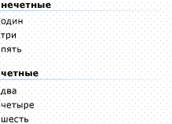

Практическое руководство. Группирование элементов в элементе управления ListView в формах Windows Forms
Функция группирования из ListView элемента управления, можно отобразить соответствующие наборы элементов в группах. Эти группы, разделенных на экране группу горизонтальных заголовков, содержащих заголовки групп. Можно использовать ListView группы для упрощения просмотра больших списков, сгруппировав элементы по алфавиту, по дате или по другим критериям. На следующем рисунке показана некоторые сгруппированных элементов.

ListView сгруппированные элементы
Чтобы включить группирования, сначала необходимо создать одну или несколько групп, либо в конструкторе, либо программным способом. После определения группы можно назначить ListView элементы в группу. Вы также можно перемещать элементы из одной группы в другую программным способом.
Note
ListView группы доступны только на Windows XP Home Edition, Windows XP Professional, Windows Server 2003 когда приложение вызывает Application.EnableVisualStyles метод. В предыдущих версиях операционных систем любой код, относящийся к группам не влияет, и группы не будут. Дополнительные сведения см. в разделе ListView.Groups.
Чтобы добавить группы
Используйте метод Add коллекции Groups .
// Adds a new group that has a left-aligned header listView1.Groups.Add(new ListViewGroup("List item text", HorizontalAlignment.Left));Warning
It looks like the sample you are looking for does not exist.
Удаление групп
Используйте RemoveAt или Clear метод Groups коллекции.
RemoveAt Метод удаляет одну группу; Clear метод удаляет все группы из списка.
Note
Удаление группы не приводит к удалению элементов в этой группе.
// Removes the first group in the collection. listView1.Groups.RemoveAt(0); // Clears all groups. listView1.Groups.Clear();Warning
It looks like the sample you are looking for does not exist.
Чтобы назначить группам элементов или перемещать элементы между группами
Задать ListViewItem.Group свойства отдельных элементов.
// Adds the first item to the first group listView1.Items[0].Group = listView1.Groups[0];Warning
It looks like the sample you are looking for does not exist.